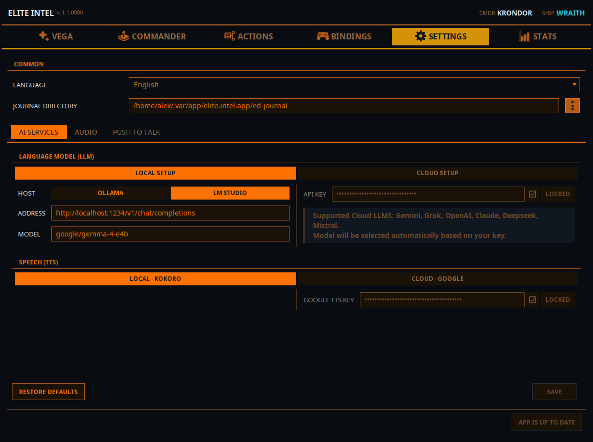
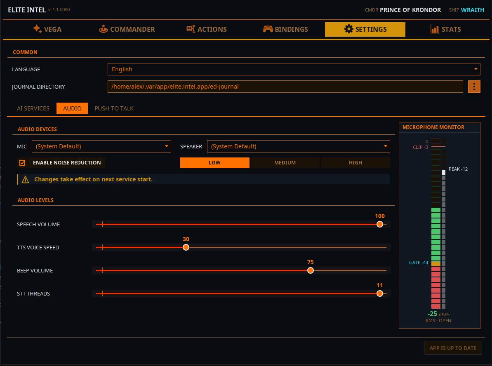
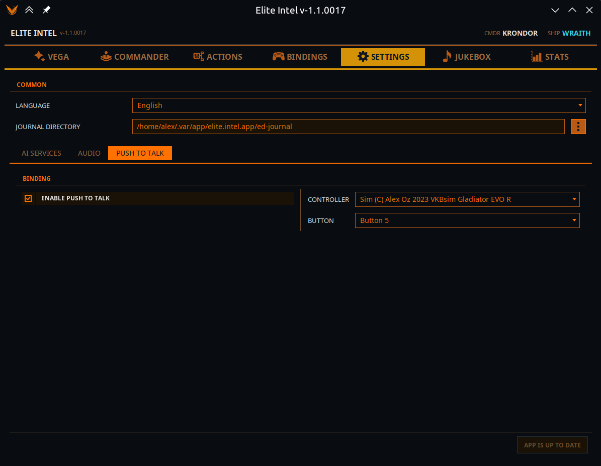

Вкладка «Налаштування»
 Інфраструктура.
Смуга Загальне, що діє скрізь, далі три підвкладки: Сервіси ШІ, Аудіо та Push To
Talk. Кнопка оновлення — внизу: Застосунок актуальний або Доступне оновлення.
Інфраструктура.
Смуга Загальне, що діє скрізь, далі три підвкладки: Сервіси ШІ, Аудіо та Push To
Talk. Кнопка оновлення — внизу: Застосунок актуальний або Доступне оновлення.
Загальне
Показується над підвкладками, бо стосується всіх.
Мова — мова ваших голосових команд і самого інтерфейсу. Вибір одразу перемальовує все вікно, і «Вега» вголос оголошує про зміну.
Підтримуються: англійська, російська, українська, німецька, французька, іспанська, італійська, португальська, бразильська португальська.
Папка журналів — куди Elite Dangerous пише файли журналу. Необов'язково: якщо залишити порожньою, використовується стандартне розташування для вашої платформи. Через неї Elite Intel знає, що відбувається навколо корабля; якщо її вказано неправильно, застосунок фактично сліпий і скаже про це під час запуску. Непридатна папка відхиляється, і зберігається попереднє налаштування.
Сервіси ШІ

Два перемикачі — для мовної моделі й для мовлення, — а невикористовувана сторона кожного приглушена, щоб було видно, яка активна.
Це єдина вкладка застосунку, що працює з чернеткою. Нічого не записується, доки ви не натиснете Зберегти, а в разі спроби піти з незбереженими правками з'явиться вибір: Зберегти, Відхилити чи Продовжити редагування.
Мовна модель (LLM)
Перемикання між LMStudio (локально) і Хмарне налаштування.
LMStudio
| Поле | Примітки |
|---|---|
| Адреса | За замовчуванням — адреса LM Studio, http://localhost:1234/v1/chat/completions. Вкажіть IP іншої машини, якщо модель працює на ній у вашій мережі |
| Модель | Ім'я моделі. Одна модель обслуговує і команди, і запити |
Підтримувана локальна модель — google/gemma-4-e4b. Якщо ваша локальна модель інша, Elite
Intel попередить під час запуску; інші моделі можуть працювати погано або не працювати зовсім.
Посібники: LM Studio в Linux · LM Studio у Windows · Серія AMD RX
Хмарне налаштування
| Поле | Примітки |
|---|---|
| Провайдер | Оберіть одного: Anthropic (Claude), OpenAI, Google (Gemini), xAI (Grok), DeepSeek, Mistral |
| API-ключ | Ваш ключ цього провайдера, поруч прапорець Заблоковано, щоб збережений ключ не змінили випадково. Зніміть прапорець, щоб змінити ключ |
Модель ви не обираєте — потрібна обирається автоматично для вашого провайдера.
Ключ належить одному провайдеру: у разі вибору іншого провайдера поле ключа очищається, щоб вставити його ключ, а в разі повернення до збереженого провайдера його ключ повертається — випадковий клік нічого не коштує. Зберегти лишається неактивною, доки не заповнено і провайдера, і ключ.
Mistral має безкоштовний тариф — найпростіший спосіб почати. Як отримати ключ у кожного провайдера: Хмарні LLM.
Мовлення (TTS)
Перемикання між Локально · Kokoro / Supertonic і Хмара · Google / Edge. Кожна сторона має другий перемикач вибору рушія.
| Рушій | Де працює | Примітки |
|---|---|---|
| Kokoro | На вашому ПК | За замовчуванням. Без ключа, нічого не залишає ваш ПК. Не вміє вимовляти кирилицю — див. нижче |
| Supertonic 3 | На вашому ПК | Десять голосів, усі мови, зокрема українська й російська. Без ключа. Повзунок Підсилення Supertonic 3 (0–100 %) піднімає рівень |
| Сервери Google | Google Cloud Text-to-Speech. Потрібен Ключ Google TTS (із тим самим прапорцем «Заблоковано»). Повзунок Висота тону Google WaveNet для голосів WaveNet | |
| Microsoft Edge | Сервери Microsoft | Онлайн-голоси «Читати вголос» від Microsoft. Ключ не потрібен |
Kokoro і кирилиця. Якщо мова застосунку українська чи російська — або ваш ігровий клієнт веде радіоефір російською, — сегмент Kokoro неактивний, банер пояснює причину, і замість нього говорить Supertonic 3. Для україномовного командира це означає: локально мовлення завжди йде через Supertonic 3.
Зміна рушія скидає голос кожного корабля на голос за замовчуванням нового рушія. Характери кораблів зберігаються. Перед цим вас попросять підтвердити.
Нижня панель
Відновити значення за замовчуванням повертає мовну модель до локального LM Studio з адресою й моделлю за замовчуванням і одразу зберігає. Зберегти фіксує все інше; кнопка неактивна, доки нічого справді не змінилося, а коли змінилося, поруч з'являється напис Незбережені зміни.
Під час збереження перезапускається лише потрібне — зміна моделі чи ключа перезапускає «мозок», зміна рушія мовлення чи його ключа — голос. Повзунки висоти тону й підсилення застосовуються без перезапуску.
Аудіо

Аудіопристрої
Списки Мікр. і Динам., або (За замовчуванням). Ті самі списки відкриваються кнопкою Аудіопристрої на вкладці «Вега». Зміна застосовується одразу — перезапускається лише служба, що використовує пристрій.
Увімкнути шумопридушення із силою Низький / Середній / Високий. Почніть із «Середнього». «Високий» — для справді галасливих приміщень: він агресивний, і надмірна фільтрація може коштувати точності розпізнавання.
Під пристроями — дві вкладки.
Рівні аудіо
| Повзунок | Що робить |
|---|---|
| Гучність мовлення | Наскільки гучно говорить «Вега» |
| Гучність радіо | Гучність радіопередач. Неактивний, поки радіопередачі вимкнено |
| Швидкість голосу TTS | Наскільки швидко говорить «Вега» |
| Гучність сигналу | Сигнал підтвердження — звучить, коли розпізнавання завершено і запит пішов у мовну модель |
| Потоки STT | Потоки CPU для розпізнавання (4–11). Це мінімальний запит, а не резерв: застосунок просить стільки, використовує те, що дає процесор, і звільняє їх після роботи |
Гучності музики тут немає — вона на вкладці «Музика», щоб ви ніколи не стишили не ту.
Звук радіопередач
Як звучать радіоповідомлення.
| Елемент | Що робить |
|---|---|
| Звуковий сигнал рації на початку й наприкінці кожного повідомлення | Тональні сигнали навколо кожної передачі, із власним повзунком гучності |
| Ефект рації | Виразніший, «брудний» радіозвук |
| Застосовувати вибрані ефекти до радіочату й повідомлень NPC | Сигнали й ефект рації вище застосовуються до радіоефіру. Якщо вимкнено, радіомовлення зберігає стандартний фільтр |
| Застосовувати вибрані ефекти до VEGA пішки або в SRV | «Вега» звучить як по рації, коли ви не в кораблі |
Монітор мікрофона
Живий індикатор рівня праворуч. Читається так:
- FLOOR — рівень шуму, коли ви не говорите.
- GATE — поріг. Звук вище порогу записується для розпізнавання; коли він опускається нижче, записане розпізнається й надсилається в мовну модель.
- CLIP — мікрофон перевантажено. Усе, що доходить до цієї лінії, розпізнається погано.
Статус показує OPEN, MARGINAL, CLOSED або HOT (перевантаження). Під індикатором з'являється підказка простими словами, якщо щось не так: Мікрофон не відкалібровано або Мікрофон надто тихий для цього приміщення — підніміть рівень входу у звукових налаштуваннях ОС і відкалібруйте знову. Якщо з мікрофоном усе гаразд, підказки немає.
Якщо індикатор не показує чіткого зазору між FLOOR і рівнем вашого мовлення, запустіть КАЛІБРУВАТИ АУДІО на вкладці «Вега» — вона виставить поріг за вас і попередить, якщо зазор замалий для роботи.
Push To Talk

З увімкненим Push to Talk мікрофон закритий, доки ви не утримуєте кнопку. Усе, що він чує без натиснутої кнопки, відкидається як шум приміщення.
| Елемент | Примітки |
|---|---|
| Увімкнути Push to Talk | Головний перемикач |
| Контролер | Будь-який під'єднаний геймпад або HOTAS. Збережений контролер автоматично вибирається знову після перепід'єднання |
| Кнопка | Яка кнопка на ньому |
| Кнопка миші | Другий тригер: Середня кнопка, Кнопка 4 (назад) або Кнопка 5 (вперед). Зручно пішки чи в SRV, коли HOTAS поза досяжністю. Ліва й права не пропонуються — ними ви стріляєте |
Утримуйте кнопку, говоріть, відпустіть. Натискання також обриває «Вегу» на півслові, тож чекати, поки вона договорить, не треба.
Поки Push to Talk увімкнено, кнопка ЗАСНУТИ / ПРОКИНУТИСЯ на вкладці «Вега» недоступна — воротами служить кнопка. Зміна тут діє з наступного натискання, і кнопка працює незалежно від того, чи відкривали ви цю вкладку.
Де зберігаються налаштування
Усі налаштування й дані зберігаються на вашому ПК:
- Linux:
~/.local/share/elite-intel/(або$XDG_DATA_HOME/elite-intel/) - Windows:
%LOCALAPPDATA%\elite-intel\
База даних — у db, власні команди — у custom-commands (із власною папкою backups), ваші ручні
знімки прив'язок — у playerbackups, автоматичні копії перед «Застосувати» — у bindings/backups.
Community 👉Matrix👈